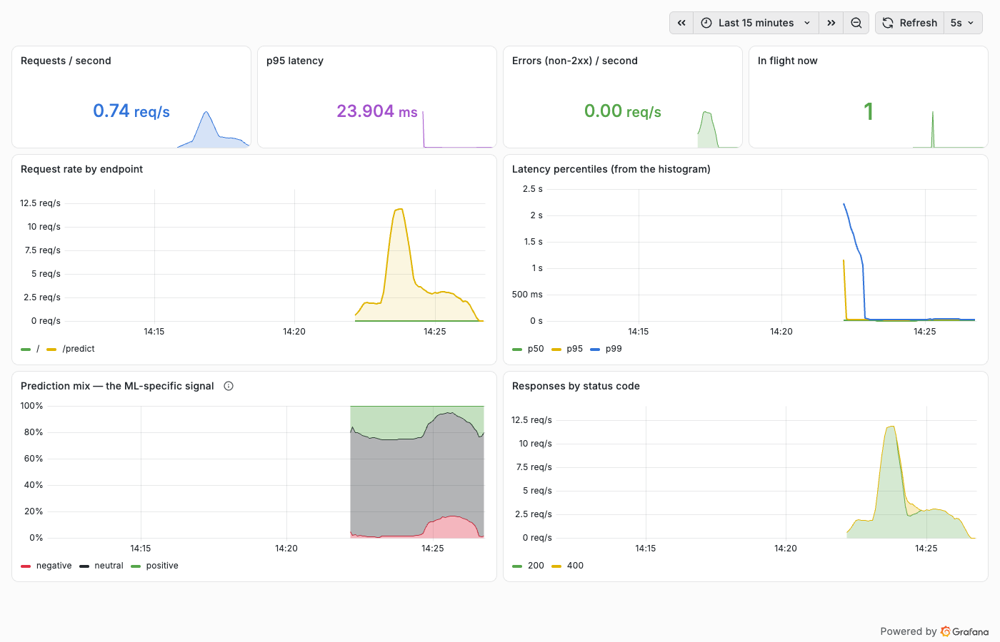
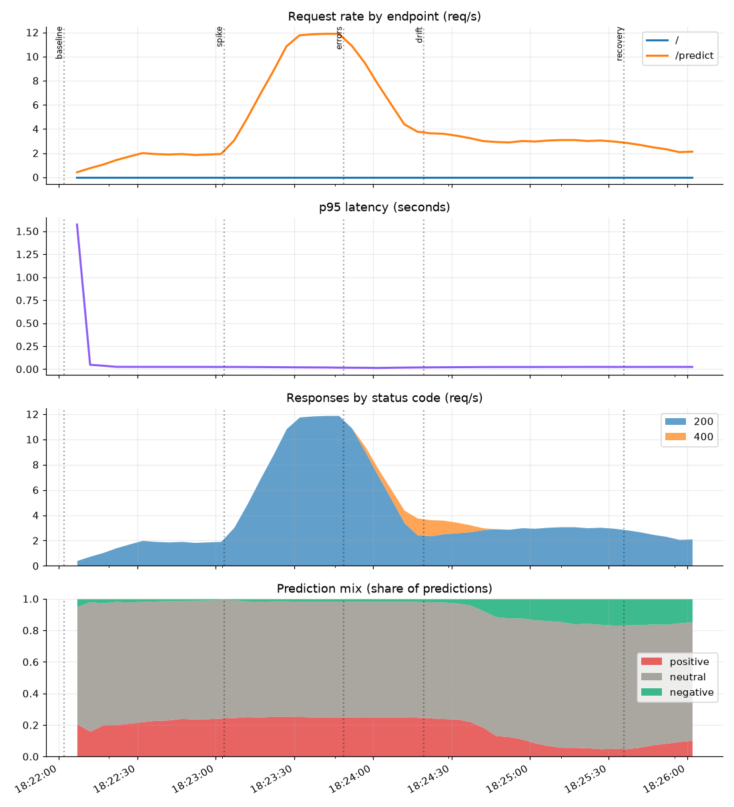

The course ends where MLOps actually begins: production. The instructor launches an EC2 instance, installs Docker, runs Grafana and Prometheus as containers, opens ports 3000 and 9090, connects one to the other and builds a live dashboard — then makes the point that matters: store your model's predictions somewhere Grafana can read, and you can see whether the model is drifting or going wrong.
The instructor's description: an open-source visualisation tool that can connect to almost any data source — databases, time-series stores, cloud services, your own application's data — and turn it into dashboards.
All three are someone else's job: your app exposes metrics, Prometheus collects and stores them.
Grafana can only show what something else already measured. The work of monitoring an ML service is deciding what to measure and exposing it — the dashboard is the easy part.
EC2 instance named grafana-demo: Ubuntu, at least 4 GB memory, an existing key pair, allow HTTP/HTTPS, 8 GB storage → Launch → Connect (browser terminal).
Install Docker (same commands as Chapter 18):
sudo apt-get update -y
sudo apt-get upgrade -y
curl -fsSL https://get.docker.com -o get-docker.sh
sudo sh get-docker.sh
sudo usermod -aG docker ubuntu && newgrp docker
docker --versionRun Grafana from the official docs, swapping the Enterprise image for the free one:
docker run -d -p 3000:3000 --name=grafana \
-v grafana-storage:/var/lib/grafana \
grafana/grafana-oss # the docs show grafana-enterprise; oss is the open-source buildThen open inbound TCP 3000 in the security group and visit http://<public-ip>:3000. First login is admin / admin, and Grafana immediately asks for a new password.
Run Prometheus (the video first mistypes the image name and gets "repository does not exist"):
docker run -d -p 9090:9090 --name=prometheus prom/prometheusOpen inbound TCP 9090, then visit http://<public-ip>:9090. Its own /metrics page shows the sort of data it collects, and the expression browser can graph any of it.
Connect them: Grafana → Connections → Data sources → Prometheus → URL http://<ip>:9090 → Save & test → "Successfully queried the Prometheus API". The data-source list shows the categories Grafana supports: time series, logging and document databases, tracing, profiling, SQL, cloud services and enterprise plugins.
Build a dashboard: New dashboard → Add visualisation → pick Prometheus → choose a metric → Run queries → the graph appears → Back to dashboard. Repeat for more panels, drag them into place, and refresh to watch the values move in real time.
Terminate the instance when finished: "otherwise it will charge you".
Every panel in the video graphs Prometheus's own metrics — the server monitoring itself. Nothing measures the model, the API, or even the machine (that would need node_exporter). The missing step is instrumenting the application, which is where our hands-on picks up: the Chapter 17 API gains a /metrics endpoint, and the dashboard then shows request rate, latency, errors and the prediction mix.
A metrics endpoint is plain text: one line per time series, with labels in braces. These are the four types the client libraries give you:
| Type | Behaviour | Our example | How you query it |
|---|---|---|---|
| Counter | only ever increases (resets to 0 on restart) | http_requests_total{endpoint,status}model_predictions_total{label} | never graph it raw — use rate(...[1m]) for per-second |
| Gauge | goes up and down | http_requests_in_flightmodel_info{version} | graph directly; max_over_time, avg |
| Histogram | counts observations into buckets, plus a sum and count | http_request_duration_secondsmodel_batch_size | histogram_quantile(0.95, …) for p95 |
| Summary | quantiles computed in the client | not used here | rarely: summaries can't be aggregated across instances |
# a real excerpt from our API's /metrics
http_requests_total{endpoint="/predict",method="POST",status="200"} 486.0
model_predictions_total{label="negative"} 512.0
model_predictions_total{label="neutral"} 1298.0
model_predictions_total{label="positive"} 803.0
http_request_duration_seconds_bucket{endpoint="/predict",le="0.1"} 470.0
http_requests_in_flight 1.0
model_info{source="local-pickle",version="v1"} 1.0<thing>_<unit>_total for counters, base units (seconds, bytes), and no units in label values.user_id, a comment's text, or a raw URL with ids will explode the database. Labels are for things with few values: endpoint, status, model version, environment.A dashboard panel is just a query. Pick one and click the parts to see what each does.
Same idea as the video's dashboard, but the metrics come from the Chapter 17 model API. The hands-on notebook ran a scripted load — baseline, a traffic spike, a burst of malformed requests, then a phase where the incoming comments turn negative — and screenshotted Grafana while it was happening:


The instructor gets to the heart of it near the end: save your model's predictions in a database, connect that database, and you can see whether the model is becoming biased or predicting badly. Here's that idea laid out properly — four layers, from the machine up to the model:
| Layer | What you watch | Where it comes from | Alert on |
|---|---|---|---|
| 1 · Infrastructure | CPU, memory, disk, GPU, restarts, pod count | node_exporter, cAdvisor, cloud metrics | saturation, restart loops |
| 2 · Service (RED) | Rate, Errors, Duration (p50/p95/p99) | the app itself, via a client library | error rate > x%, p95 > SLO |
| 3 · Data | schema changes, missing values, out-of-range inputs, feature drift | validation in the pipeline; Evidently, Great Expectations, Deequ | schema break (page), drift (ticket) |
| 4 · Model | prediction distribution, confidence, and accuracy once labels arrive | counters per predicted class; a delayed evaluation job | prediction mix shift, accuracy drop |
In our run it moved from 0.9% negative to 16.8% within two minutes of the input changing, while latency and error rate stayed flat. Ground truth usually arrives late — hours for a click, days for a refund, never for some tasks. Meanwhile, the distribution of what the model predicts is available immediately. A sudden shift means either the world changed or your input pipeline broke; both need looking at.
Monitoring feeds back into everything earlier in the course: an alert triggers an investigation, which triggers a retrain (Chapter 12's DVC pipeline), a new run in MLflow (Chapter 14–15), a new registry version (Chapter 17) and a deployment through CI/CD (Chapter 18). That loop is MLOps.
Prometheus evaluates rule files on a timer; an alert fires only after the condition has held for the for: duration, which stops one bad scrape from waking anyone. Our rules:
- alert: HighErrorRate
expr: sum(rate(http_requests_total{status!~"2.."}[1m])) > 0.05
for: 30s
- alert: NegativeSentimentSurge
expr: sum(rate(model_predictions_total{label="negative"}[2m]))
/ sum(rate(model_predictions_total[2m])) > 0.5
for: 1mFiring alerts go to Alertmanager for grouping, silences and routing. Grafana has its own alerting engine too — pick one so alerts don't arrive twice.
The video builds the data source and the dashboard by clicking. Both are just configuration, and Grafana can load them from files at startup:
provisioning/datasources/prometheus.yml # the URL you'd paste in the UI
provisioning/dashboards/dashboards.yml # "load dashboards from this folder"
dashboards/mlops.json # the dashboard itselfKeep those in git and a fresh Grafana comes up fully configured — no clicking, reviewable changes, and the same dashboard in staging and production. That's exactly what our hands-on does.
Worth knowing next: variables (a dropdown for environment or model version), annotations (mark deployments on the graph — very useful for "did the new model cause this?"), and Loki / Tempo for logs and traces beside the metrics.
prometheus_* and go_* series describe the monitoring server, not the machine and not any application. Real system metrics need node_exporter; real app metrics need instrumentation.grafana-storage:/var/lib/grafana; without it, dashboards and the changed password vanish when the container is recreated. The same applies to Prometheus's TSDB.0.0.0.0/0 over plain HTTP, with the default account, is fine for a demo and dangerous otherwise. Restrict the security group to your IP, put TLS in front, and change the password (the video does change it).rate(). Graphing http_requests_total raw gives an ever-rising line that says nothing. This is the most common first mistake in PromQL.rate(x[1m]) must cover at least two scrapes, so with a 60 s scrape interval a 1-minute window is unreliable — use 2–5 minutes.projects/ch23_grafana/
├── instrumented_api.py # ch17 API + /metrics (counters, gauges, histograms)
├── prometheus.yml # scrape the API every 5s + rule_files
├── alerts.yml # HighErrorRate · SlowResponses · NegativeSentimentSurge
├── grafana/provisioning/ # data source + dashboard provider, as files
├── grafana/dashboards/mlops.json # 8 panels, the dashboard as code
├── traffic.py # baseline → spike → errors → drift → recovery
├── stack.py # start/stop the three processes; downloads the binaries once
└── grafana_walkthrough.ipynbNot run here (it's on your after-course to-do list): the video's EC2 + Docker version, node_exporter for machine metrics, and Alertmanager wired to Slack.
The notebook downloads Prometheus (~100 MB) and Grafana (~450 MB) once into ~/.cache/mlops-course-tools. Remove it with rm -rf ~/.cache/mlops-course-tools when you're done.
In four layers: infrastructure (CPU, memory, restarts), service (request rate, error rate, latency percentiles), data (schema, missing values, feature drift) and model (prediction distribution, confidence, and accuracy once ground truth arrives). Fast signals first — prediction mix and input statistics are available immediately, accuracy usually is not. Alert on the things that need a human tonight; dashboard the rest. Feed alerts back into retraining.
Prometheus scrapes targets over HTTP, so it must be able to reach them (network rules), and targets don't need to know where Prometheus is. It also gives you a free health signal (up) per target. Short-lived batch jobs can't be scraped, so they push to a Pushgateway instead. Push-based systems (StatsD, OpenTelemetry collectors) suit ephemeral workloads and client-side metrics.
Counter for things that only accumulate (requests, errors, predictions) — always query with rate(). Gauge for a current value (queue depth, in-flight requests, memory). Histogram for distributions (latency, payload size) so you can compute p95 across instances with histogram_quantile. Summaries compute quantiles client-side and can't be aggregated, so prefer histograms.
histogram_quantile(0.95, sum by (le) (rate(http_request_duration_seconds_bucket{endpoint="/predict"}[5m]))). The key points: aggregate the buckets with sum by (le) before taking the quantile, and use a range long enough to cover several scrapes.
Compare the live input distribution with a reference (the training set or last week) using statistical distances — PSI, KL divergence, Kolmogorov–Smirnov per feature — computed in a scheduled job (Evidently, or your own), and export the score as a metric so it can be alerted and graphed. Also watch the prediction mix, which needs no labels. On a real drift: investigate whether the data pipeline broke first, then consider retraining on recent data, and compare the candidate against production before promoting it.
It's actionable, it's based on symptoms users feel (error rate, latency) rather than causes, it has a for: duration so noise doesn't page anyone, it has an owner and a runbook, and there are few of them. Alert fatigue is a real failure mode: if people routinely ignore alerts, the monitoring has failed even though it "works".
Treat them as code: dashboard JSON and data sources in git, loaded by Grafana's provisioning (or Terraform / Grizzly). Use template variables for environment, service and model version instead of copying dashboards, and annotate deployments so you can line up a metric change with a release.
Accuracy on labelled data may not reflect live traffic: check whether the input distribution moved (drift), whether labels are delayed or biased in collection, whether a feature pipeline silently changed (nulls filled differently, a unit change), whether latency or errors are the real problem, and whether a segment is failing while the average holds. Segment the metrics — overall averages hide exactly this.
/metrics → Prometheus scrapes, stores and evaluates alert rules → Grafana queries it and draws dashboards → Alertmanager routes alerts.grafana/grafana-oss on 3000 and prom/prometheus on 9090 → open both ports → admin/admin → add the Prometheus data source → Save & test → New dashboard → Add visualisation → pick a metric → Run queries → arrange panels → terminate the instance afterwards.rate()), gauge, histogram (with histogram_quantile()), summary.That's the last chapter. The pieces now form one loop:
What's left is practice on your own project — the after-course to-do list has the account-based steps we deferred, chapter by chapter.